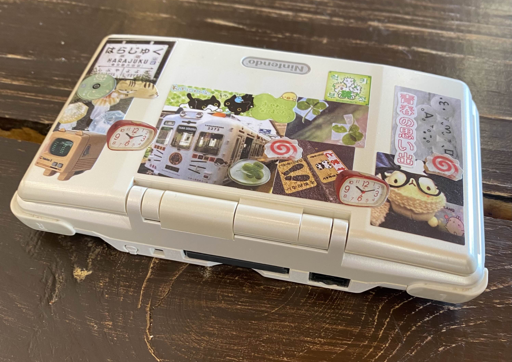
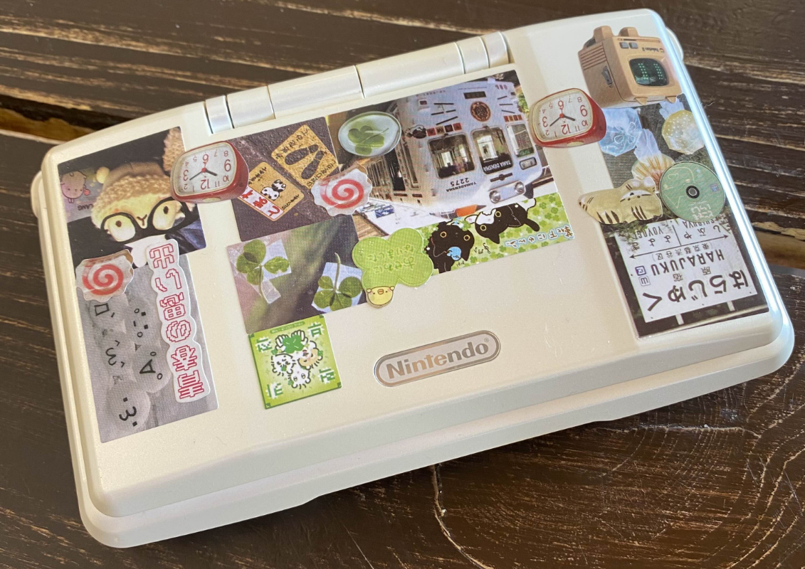

The Fatty


i don't think i really saw many people carrying the original ds when these things first became popular in my home town. the lite was released 2 years after the original one, which is pretty early to release a new console. i suspect it was foresought during the original's debut as a redesign.
while i see the benefits to the lite, i have to favor the fatty for its chunkiness; its grip is reliable with many grooves for the human finger to tuck into, and the weight feels nice to me. while that kind of bulky attitude makes her unpopular, it also makes her much more accessible on the secondhand.
i noticed the fatty doesn't feel great in pants pockets, but tbh if you're going to play games you will want something that feels fun to hold, not a machine that is made to conceal the fact that its a machine. something i thought the lite (and versions beyond) has a weaker race in was its tactile feedback and how shy it wanted to be in the wrong ways. fatty's d-pad is solid and its audible clicks even complement its games just like the gba while the lite tried to adopt a quieter design only to have worse diagonal control. speaking of the gameboy advance, the fatty's tray seats cartridges completely. though, the ds has my favorite library...